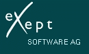

ATTENTION:
The following licence applies to the free releases only.
The licence conditions of the commercial and/or full versions are set forth in LICENCE_STX.html.
You may only install and use Smalltalk/X if you
accept the terms of the following software licence agreement.
If you do not agree with those terms, please remove all copies of the
program and support files from your system and contact eXept.

Exept Software AG
Talstr. 3
74321 Bietigheim-Bissingen
Germany
Tel.: +49-7142-91948-0
Fax: +49-7142-91948-44
Email: info@exept.de
These are our own additional restricting rules. Even if official export regulations do change in the future, we reserve the right to keep/change/extent our own and deny delivery into any country, organisation or individual which we believe should not be supported directly or indirectly by our work.We keep the right to extent the above list for any country, corporation or organisation, which does not honor a (what we consider as being a) minimal set of human rights.
If you are uncertain whether these apply to your particular corporation or intended use, please contact eXept and/or ask for a non-free licence.
If you do not like these restrictions, feel free to write your own Smalltalk, buy our or another commercial version, or program in Java, C# or any other environment.
But please do not ask for or use our *free* one.
- You are not allowed to remove any of the original copyright notices.
- You are not allowed to remove eXept's or Claus Gittinger's name from any documentation.
- You are not allowed to change the eXept logo or the ST/X logo in either the documentation or the program (eg. icons).
- You are not allowed to pretent that this software has been written by anyone else or is owned by anyone else than eXept Software AG and Claus Gittinger.
- Every changed file must be marked as being changed, by adding some informational text to either the very beginning or the end. In case of a changed Smalltalk class, such information must be added to the classes documentation method. The added text must contain at least the following:
this is derived from file XXXX from the ST/X distribution VVV (4.x.y);
change by: whoDidIt date: DD.MM.YYYY
Any product or application based on ST/X must not be bundled with the ST/X system in a form which makes it unclear, which parts of the system are original and which have been added or modified. Instead, the product or application must consist of a number of add-on packages (i.e. binary or source files or patches) which can be installed/loaded/compiled into an original ST/X system.
If a modified ST/X system is required for the application, any such modifications or bug fixes of the original system must be made available to the end user and to eXept upon request, and your documentation (either shown by the program or by providing additional information files) must make clear, where those modifications were made.
You are allowed to deliver your application in a way which makes this physical separation transparent to the end-user (by providing an installation procedure which installs both the ST/X components and the added application components), but you are required to separate the application package in a way which allows for it to be loaded or executed using another ST/X system.
You are allowed to create shrink-wrapped end user applications, which are delivered in
binary form if the following conditions are met:
Upon request, you shall make available (or at least provide information on how to get)
the original ST/X system on which the binary libraries are built, and provide information
on any changes, removals or additions made to the original ST/X system as described above.
You are not required to provide or make available the source-code of any additional
or application specific code - unless, as described above, these are additions/changes to
the original ST/X system.
In technical terms: you are not required to deliver the source code of new application
classes, but you are required to do so (upon request) if you either replace an existing
ST/X base system class, or modify individual methods, remove or add new methods to any of those
classes, documentation or support files.
The ST/X system itself may never be subject of any end-user license; instead, the
original or modified base ST/X system must be made available to any interested end-user
for free.
However, the end-user must honor this license agreement, and the distributor
must ensure this to his best knowledge.
Any such public domain software is not to be considered part of the Smalltalk/X package and not covered by this licence agreement. It is included on the distribution medium for your convenience and in accordance to that particular public domain software's license rules.
We do not want people to take the ST/X system more or less as-is, and resell it without much added code as a development system, as a webServer, as an FTP server or client, as a javaScript engine, etc. Of course, the reason is because we would feel treated unfair, by giving away so much functionality for free and someone else making money out of it.
To prevent this, we require that anyone who uses ST/X based on this free licence must give away the original ST/X for free (upon request). So anyone who is interrested (incl. eXept) can see and judge for what the added value of that particular commercial product really is. Also, if there is not much added value, someone else can easily create the same application and give it away for free then.
Notice that (if you intent to create such a "little-added-value application") there is still
a chance to do so using ST/X:
use a non-free ST/X licence, which gives eXept its share and allows you to create whatever binary
executable you want, without a need to expose any information about what was your code and what
was already present in the base system.